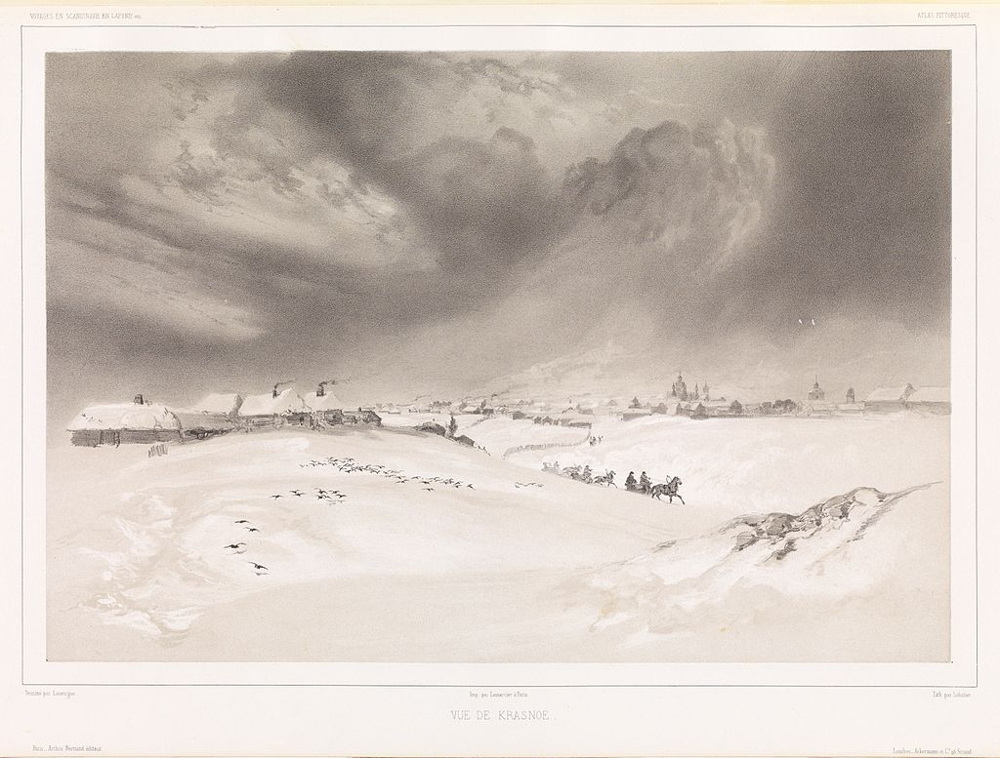
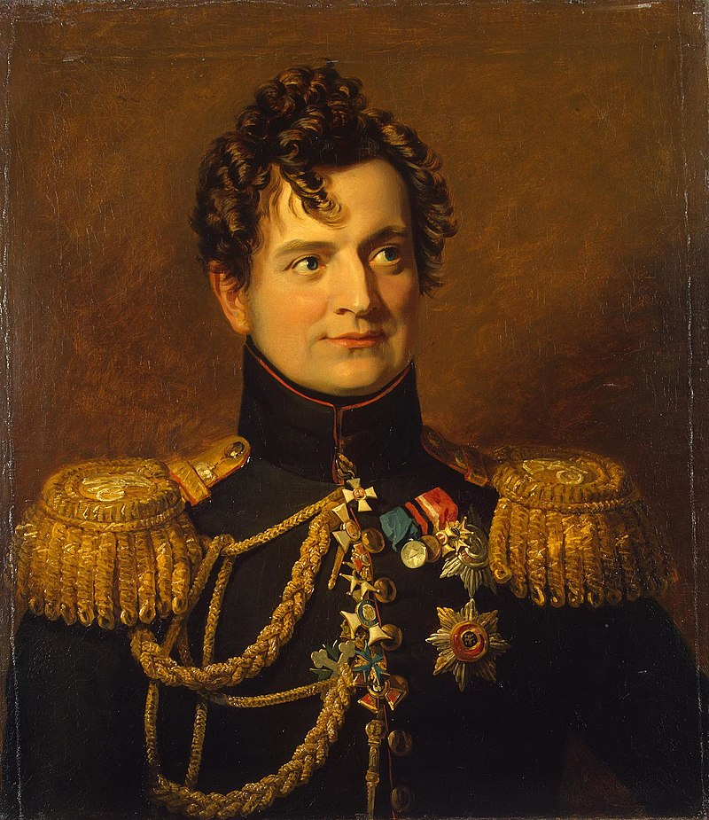
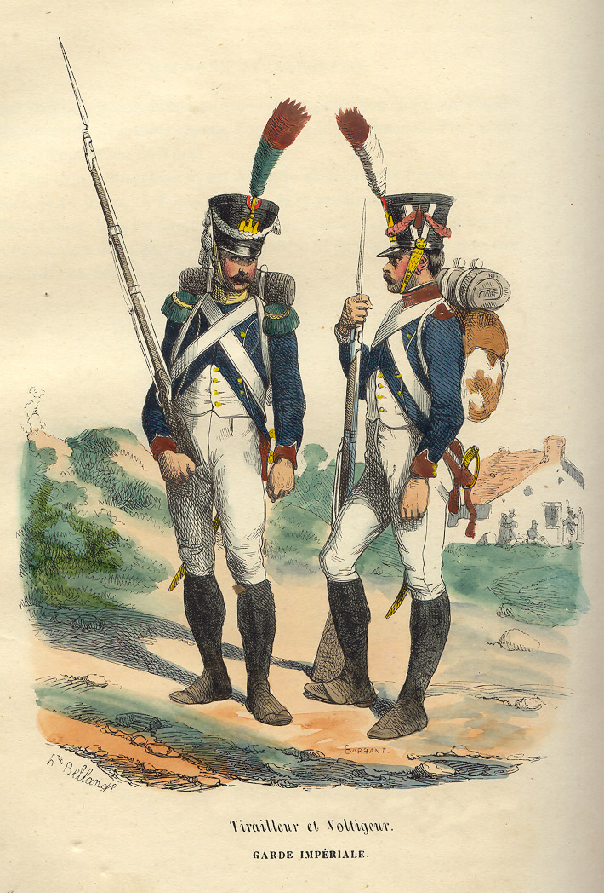

외젠의 기묘한 모험 - 크라스니(Krasny) 전투 (1)
게시: 2021-08-09T06:30:50+09:00
나폴레옹은 스몰렌스크에서 4일간 머물며 뒤에서 따라오는 군단들이 집결하기를 기다린 뒤, 11월 13일 서쪽으로 후퇴를 재개했습니다. 이제는 군단이라고 말하기 어려울 정도로 줄어든 쥐노와 포니아토프스키의 군단들을 먼저 출발시킨 그는 11월 14일 모르티에가 지휘하는 근위대와 함께 자신이 출발했으며, 그 다음날 외젠의 제4군단, 그 다음날은 다부의 제1군단, 마지막날엔 네의 군단이 출발하도록 했습니다. 이 결정은 잘 이해가 가지 않는 부분입니다. 이렇게 띄엄띄엄 분산하여 출발하는 것은 당연히 큰 취약점이 되었습니다. 11월 3일의 비아즈마 전투에서 프랑스군이 허리를 잘리고 고전했던 것도 길게 늘어진 상태로 행군하고 있었기 때문이었습니다. 그런데도 이렇게 하루 단위로 군단들이 하나씩 출발한 것은 여전히 나폴레옹이 쪼그라든 병력에 대해서도 군단, 사단 등의 용어를 써가며 그에 맞춘 작전 지시를 내렸기 때문이었습니다. 나폴레옹과 함께 움직이던 근위대는 아직 1만6천 정도의 군단 규모를 유지했지만, 나머지 군단들의 상태는 참혹했습니다. 스몰렌스크에서 보충병을 받았음에도 외젠의 제4군단은 4천, 다부의 제1군단은 9천, 네의 제3군단은 6천에 불과했습니다. 그런데도 나폴레옹이 굳이 각 군단들이 정말 군단 규모인 것처럼 행군하도록 한 것은 허영심과 체면 외에도 사정이 있긴 했습니다. 가장 큰 문제는 낙오병들이었습니다. 남은 전투 부대가 총 4만 규모였는데, 그들 주변에 따라오는 낙오병들의 규모도 대략 그 정도였습니다. 그들이 걷는 길은 다져지고 얼어붙은 눈으로 인해 미끄러웠고, 곳곳의 부실한 다리와 작은 고갯길은 잦은 병목을 유발시켰습니다. 당시 부대들은 대개 연대 단위로 소속감을 공유했기 때문에, 그런 병목 지점에서 여러 부대들이 뒤엉키다보면 부대 전체가 낙오병 무리가 되어버릴 수도 있었습니다. 특히 부대 주변에는 수만 명 단위의 낙오병들의 무리가 따라오고 있었으므로, 이들과 뒤섞여 흩어지지 않도록 하는 것이 무척 중요했습니다. 게다가 나폴레옹의 이런 군단 단위의 작전은 러시아군에게도 혼선을 주는 의도치 않은 효과도 주었습니다. 나폴레옹이 남발했던 별 소용없는 작전 명령서 중 상당수가 파발마에 의해 전달되는 도중에 코삭들에게 탈취되어 러시아군 수뇌부에 들어갔는데, 거기에 쓰인 내용이 군단, 사단 등의 단위이다보니 러시아군도 그랑다르메의 규모를 실제보다 더 큰 것으로 오인하고 함부로 요격할 생각을 못했다고 합니다. 그러나 이렇게 4만에 불과한 그랑다르메를 몇 토막 내어 진격하게 한 것은 분명히 문제가 있는 결정이었습니다. 아직까지 대오를 이루고 남아있는 부대원들은 정말 체력과 군율, 생존 본능 등에 있어서 단련된 정예 부대였습니다. 콜랭쿠르는 훗날 회고록에서 차라리 이떄 스몰렌스크에서 부상병들과 약탈물을 실은 마차와 함께 쓸데없는 대포들 200문 정도를 모두 버리고 아직 쓸 만한 이들 병력만 추려서 신속하게 탈출했다면 재기의 발판을 마련할 수 있었을 것이라고 주장하며, 패주한다는 불명예를 인정하고 싶지 않았던 나폴레옹이 화를 자초했다고 평가했습니다. 그리고 나폴레옹은 그 대가를 생각보다 더 빨리 치르게 됩니다.

(1840년 경 크라스니의 모습을 그린 로베르뉴(Barthélemy Lauvergne)의 판화입니다. 크라스니는 지금도 인구 5천 정도의 소도시입니다.) 나폴레옹이 가능한 한 모든 대포와 병력을 다 끌고 후퇴하는 것을 고집하는 바람에 남쪽에서 나폴레옹과 평행으로 추격해오던 러시아군은 여유있게 나폴레옹을 앞질러 미리 길을 끊을 수 있었습니다. 긴 후퇴 대열의 선두에서 근위대와 함께 후퇴하던 나폴레옹이 11월 15일 아침 크라스니(Krasny, Krasnyi, Krasnoi) 인근에 도착해보니, 크라스니는 물론 거기로 향하는 도로에는 러시아군이 이미 포진하고 있었습니다. 이제 나폴레옹 본인이 이끄는 그랑다르메와 러시아 추격군과의 정면 충돌은 피할 수 없는 상황이 되었습니다. 쿠투조프가 이제는 때가 되었다고 생각하고 결전을 벌이려 했던 것아었을까요 ? 그럴 리가 없었습니다. 실은 쿠투조프는 뭔가 잘못된 정보를 듣고 이 날 크라스니로 향하는 적군은 그랑다르메의 작은 일부이며, 나폴레옹 본인이 이끄는 주력 부대는 훨씬 더 북쪽에서 평행으로 움직이고 있다고 알고 있었습니다. 나폴레옹 본인이 빠진 소규모 부대라면 자신의 병력으로도 안전하게 포위 몰살시키는 것이 가능하다고 쿠투조프는 생각했던 것입니다. 그래서 그는 오자로브스키(Adam Ożarowski) 장군이 이끄는 코삭 기병대 약 3천5백으로 크라스니를 점령하고, 이어서 밀로라도비치의 1만6천 병력으로 그 앞의 대로변 옆에 있는 르샤브카(Rshavka)라는 마을에 진을 치고 그 소수의 프랑스군에게 항복을 강요할 생각이었습니다. 그러는 와중에도 본인이 이끄는 3만5천의 본진은 서두르지 않고 천천히 남쪽에서 다가오고 있었습니다.

(오자로브스키(Adam Petrovich Ozharovsky) 장군입니다. 그는 원래 폴란드 태생이었는데, 1794년 폴란드의 애국자 코시우스코(Kościuszko)가 일으킨 반란 와중에 친러파 귀족인 아버지가 반란군의 손에 사로잡혀 죽자 러시아로 도망친 사람이었습니다. 그는 러시아 귀족의 딸과 결혼하여 러시아에 정착했고 로마노프 왕조를 위해 평생을 싸웠습니다. 심지어 은퇴한 이후인 1831년 폴란드의 어린 애국 사관생도들이 주도한 독립을 위한 반란이 일어나자 다시 군에 복귀하여 그 진압에 나서기도 했습니다. 폴란드의 입장에서 보면 그런 매국노가 따로 없겠습니다만 오자로브스키 입장에서는 폴란드 독립군은 모두 아버지의 원수라고 생각했겠지요.) 비록 쿠투조프가 상황을 잘못 파악하는 바람에 벌어진 전투였지만, 판세는 나폴레옹에게 크게 불리했습니다. 당장 그와 함께 있는 것은 아무리 최정예 근위대라고 해도 약 1민6천 정도에 불과했는데, 러시아군의 세력은 당장 눈 앞에 있는 병력만도 그에 맞먹는 규모였고 그 뒤의 크라스니와 남쪽의 쿠투조프 본진, 그리고 주변에서 소규모로 그랑다르메의 발뒤꿈치를 따라다니는 약 2만의 코삭 부대까지 있었습니다. 그럼에도 불구하고 위기에 처하자 나폴레옹은 본연의 모습으로 되돌아왔습니다. 그는 사방의 러시아군이 포위망을 좁혀들기를 기다리지 않고 즉각 정면 돌파에 나섰습니다. 나폴레옹이 직접 선두에 서서 장엄하게 전투 대형으로 진격을 시작하자, 밀로라도비치의 러시아군은 감히 맞붙을 생각을 하지 못하고 르샤브카 마을에 얌전히 웅크리고 있었습니다. 다만 도로변에 늘어선 포병들을 이용하여 측면에서 열심히 포격을 퍼부었으나, 겉보기에도 사기충천 해보이는 근위대의 돌격을 두려워한 나머지 너무 먼 곳에서 포격을 했기 때문에 그다지 큰 피해를 주지는 못했습니다. 러시아 측에서는 코삭 기병대를 이용하여 이들의 진격을 늦춰보려 했으나 잘 훈련된 근위대에게는 코삭 기병대의 협박은 전혀 통하지 않았습니다. 후방 게릴라전을 이끌던 다비도프(Denis Davydov)도 이때 이 자리에 있어서 근위대가 코삭 기병들의 방해를 그대로 돌파하는 모습을 지켜보았는데, 나중에 문필가로도 이름을 떨친 그는 그 모습을 "낚시 보트들 무리를 뚫고 항진하는 100문짜리 전열함" 같았다고 표현했습니다. 무사히 크라스니에 도착해 오자로브스키의 코삭 부대까지 별 어려움 없이 쫓아낸 나폴레옹은 비로소 군단별로 하루의 간격을 두고 후퇴한 자신의 결정이 잘못되었다고 판단했는지, 더 진격하지 않고 크라스니에서 뒤쫓아오는 외젠과 다부, 네의 군단들을 기다리기로 합니다. 어떻게 생각하면 거기서 그럴 것이 아니라 크라스니로 오는 길을 가로 막은 밀로라도비치의 부대를 공격하는 것이 맞았습니다. 규모도 더 크고 컨디션도 더 좋았던 근위대야 어렵지 않게 밀로라도비치의 부대를 밀어낼 수 있었지만 허약한 외젠의 제4군단도 그럴 수 있으리라고는 생각되지 않았으니까요. 나폴레옹도 가만히 있지는 않았습니다. 그날 밤 크라스니 바로 남쪽 쿠트코보(Kutkovo)에서 부대가 야영하는 불빛을 본 나폴레옹은 신참 근위대를 파견하여 그를 급습하도록 했습니다. 그 불빛은 크라스니에서 밀려난 오자로브스키의 코삭 3천5백이었습니다. 기습은 완벽하게 성공하여 그 중 절반이 사살되거나 포로로 잡혔고 나머지도 뿔뿔이 흩어져 도주했습니다. 다만 보병으로 기병을 습격하다보니 더 이상의 추격 및 전과 확대는 불가능했습니다.

(신참 근위대(the Young Guard, la Jeune Garde)는 원래 신체적 우월함 뿐만 아니라 여러번 원정 작전에 참전하여 그 용기가 입증된 병사들로 구성된 고참 근위대(the Old Guard, la Vieille Garde)와는 달리 그냥 1809년 이후 징집병 중에서 읽고 쓸 줄 알고 체구가 큰 병사들을 뽑아 만든 부대입니다. 원래의 정식 명칭은 1er Régiment de Tirailleurs de la Garde Impériale, 즉 황실 근위대 제1 저격병 연대인데 이 부대를 창설할 때 그런 조건의 신참 징집병들을 뽑아 만들다보니 신참 근위대라는 이름이 붙었다고 합니다. 이들은 같은 근위대 내에서도 고참 근위대처럼 진짜 베테랑으로는 인정받지 못했습니다. 저 그림 속 병사들은 머스켓 소총 뿐만 아니라 허리에 군도를 차고 있는데 그것이 바로 근위대의 특권이었습니다. 다만 저 군도는 그냥 멋일 뿐 실제 전투에서는 쓸모가 없었으므로 전투에 나갈 때는 떼어놓고 나갔다고 합니다.) 그러는 사이 날이 밝아 11월 16일이 되자, 외젠의 이탈리아 군단이 나타났습니다. 이들의 숫자가 얼마 안 되는 것을 본 밀로라도비치는 어제와는 달리 자신감 있게 도로를 막고 백기를 든 전령을 보냈습니다. 이쪽은 2만의 보병이 있고 측면은 코삭 기병들이 포위하고 있으며 바로 남쪽에는 쿠투조프의 전체 러시아 야전군이 대기하고 있으니 무의미한 피를 흘리지 말고 항복하라는 좋은 이야기를 전달하기 위해서였습니다. 그러나 외젠은 젊어서부터 삐딱한 청년이었습니다. 그는 "니들이 2만이면 우리는 8만이다"라는 뜬금없는 답변을 돌려보내고 이제 10문 밖에 남지 않은 대포를 방열하기 시작했습니다. 곧 치열한 포격과 함께 유혈이 낭자한 전투가 벌어졌습니다. 놀랍게도 4천의 이탈리아군은 한치도 물러서지 않고 4배에 달하는 러시아군과 대등하게 싸웠습니다. 당시 이탈리아군에 배속되어 있던 한 프랑스 장교는 '1시간만 해가 늦게 졌어도 우리는 끝장 났을 것'이라고 말할 정도로 전투는 치열했고, 이탈리아군은 이 전투에서 1천3백 정도의 사상자를 냈습니다. 1대4로 싸웠으나 물러서지 않았으므로 이탈리아군의 승리라고 보기에는 상황이 너무 절박했습니다. 여전히 크라스니로 가는 길은 막혀 있었고, 바로 해가 뜨면 전투가 재개되어 정말 전멸을 당할 위기였습니다. 이때 외젠의 참모진에 있던 한 폴란드 대령이 외젠에게 궁여지책의 아이디어를 냈습니다. 모든 부상병과 대포와 짐을 버리고 어둠 속에서 병사들을 러시아군의 포위망 옆으로 우회 이동시켜 크라스니로 돌아들어가자는 것이었습니다. 다른 방책이 없던 외젠은 그 대령의 말대로 남은 2천여명의 부하들을 이끌고 어둠 속에 살금살금 도둑 고양이처럼 이동했습니다. 그러나 러시아군도 바보가 아니었습니다. 밀로라도비치는 당연히 요소요소에 경계 부대를 배치해두었습니다. 어둠 속에서 러시아어로 '누구냐'라는 수하가 들려오자 외젠은 속으로 폴란드 대령의 말도 안되는 계책을 받아들인 자신을 욕했지만, 폴란드 대령이 유창한 러시아어로 "쿠투조프 원수의 비밀 명령을 수행하기 위해 이동하는 부대"라는 어설픈 거짓말로 답을 하자 놀랍게도 러시아군은 그들을 얌전히 통과시켜주었습니다. 이런 행운에 어떨떨한 외젠은 결국 무사히 17일 새벽 크라스니로 들어가 나폴레옹과 만날 수 있었습니다. 나폴레옹은 이 날 새벽 외젠의 믿기지 않는 모험담 외에 달갑지 않은 소식 하나를 더 받아들고 있었습니다. 크라스니 남쪽 불과 몇 km 떨어진 곳에 쿠투조프의 본대가 나타났다는 소식이었습니다. 나폴레옹은 입장이 매우 난처했습니다. 아직 뒤에는 다부와 네의 군단들이 남아있었습니다. 그들이 크라스니까지 오려면 앞으로 2일을 여기서 더 기다려야 하는데 그 사이에 쿠투조프의 본대가 크라스니 서쪽으로 돌아서 나폴레옹의 퇴로를 막으면 모든 것이 끝장이었습니다. 게다가 다부와 네가 온다고 해도 과연 밀로라도비치를 포함한 러시아군의 봉쇄를 뚫고 자신과 합류할 수 있을지 여부도 불투명했습니다. 나폴레옹은 다부와 네를 버려두고 근위대와 제4군단만 데리고 후퇴하는 방안, 심지어 전체 군을 여기에 버려두고 자기 혼자 파리로 먼저 돌아가는 방안까지도 고민했습니다. 고민할 시간이 많지 않았고, 나폴레옹은 오래 고민하지 않았습니다. 그는 곧 결정을 내렸습니다. Source : 1812 Napoleon's Fatal March on Moscow by Adam Zamoyski
https://en.wikipedia.org/wiki/Battle_of_Krasnoi https://en.wikipedia.org/wiki/Adam_Petrovich_Ozharovsky https://en.wikipedia.org/wiki/Tirailleur https://en.wikipedia.org/wiki/Imperial_Guard_(Napoleon_I)